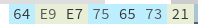
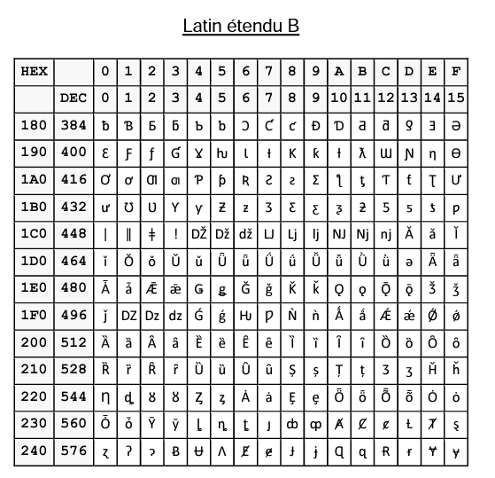
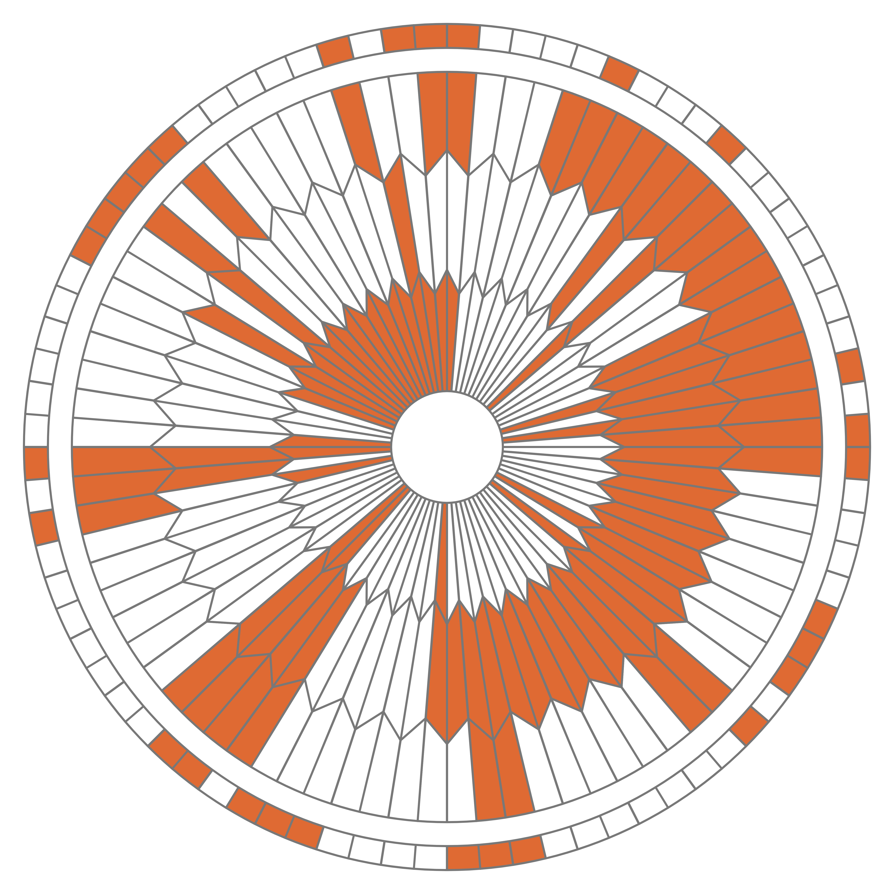
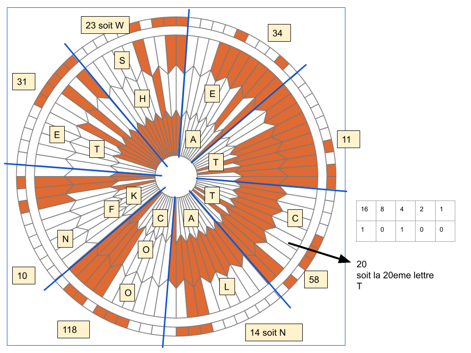
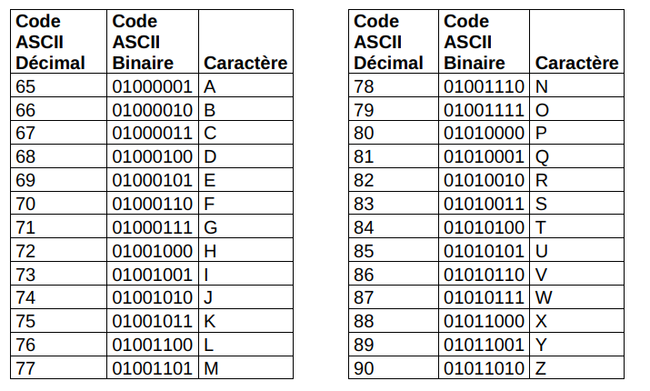
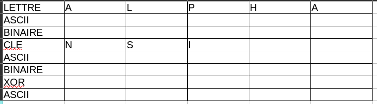
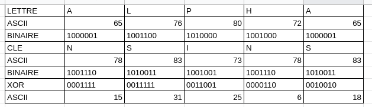
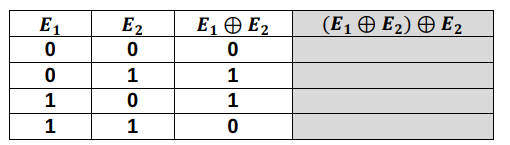
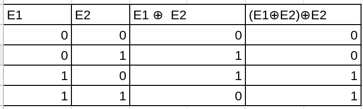

DS codage Gpe2
| Thème 1 : Types de bases |
|---|
| DS | Codage des caractères |
|---|

Table ASCII
Exercice 1 :
Décoder l'expression suivante, écrite en ASCII :
```01010000 01100101 01110010 01110011 01101111 01101110 01101110 01100101 00100000 01110000 01100001 01110010 00100000 01101100 01100001 00100000 01100111 01110101 01100101 01110010 01110010 01100101 00100000 01101110 01100101 00100000 01100100 01100101 01110110 01101001 01100101 01101110 01110100 00100000 01100111 01110010 01100001 01101110 01100100 00101110 00001101 00001010 00001101 00001010 ```
Yoda
Correction
- Première méthode en passant par les binaires :
| 128 | 64 | 32 | 16 | 8 | 4 | 2 | 1 | dec | lettre ASCII |
|---|---|---|---|---|---|---|---|---|---|
| 0 | 1 | 0 | 1 | 0 | 0 | 0 | 0 | 80 | P |
| 0 | 1 | 1 | 0 | 0 | 1 | 0 | 1 | 101 | e |
- Deuxième méthode en passant par l'hexadécimal en découpant 4 par 4 :
-
pour 01010000 -> 0101 soit 5 et 0000 soit 0 donc en hexadécimal 50 donc la lettre P
-
pour 01100101 -> 0110 soit 6 et 0101 soit 5 donc en héxadécimal 65 donc la lettre e
-
etc ...
Au final, on obtient une citation de Yoda :
"Personne par la guerre ne devient grand"
 Latin-9
Latin-9
Exercice 2 :
Q.1. Le mot représenté par les octets ci-dessous est-il codé en ASCII ou en Latin 9 ? Donner ce mot :

Q.2. Représenter goûté en Latin-9
Correction
- Le mot codé est déçus!
- goûté : 67 6F FB 74 E9

Exercice 3 :

Donner le codage Unicode la lettre Ɋ puis son codage en UTF-8
Correction
Ɋ - -> Unicode : +U024A
-
-> sur 11 bits :
- A en binaire -> 1010 (4 bits)
- 4 en binaire -> 0100 (4 bits)
- 2 en binaire -> 010 (3 bits restants)
-
-> on remplie les 2 octects :
- 11001001
- 10001010
-
-> en repassant à l'hexadécimal :
- 12 soit C et 9
- 8 et A
-
-> en UTF-8 : C9 8A
Exercice 4
Décoder le message suivant :

Correction

Exercice 5
Le défi du cours : codage UTF-8 (Latin-9), décoder le texte ci-dessous :
`56 65 72 73 20 6C 27 69 6E 66 69 6E 69 20 65 74 20 6C 27 61 75 2D 64 65 6C C3 A0``
Correction
Vers l'infin et l'au-delÃ
Exercice 4 :
Codage XOR :
Q.1. Le nombre 65, donné ici en écriture décimale, s’écrit 01000001 en notation binaire. En détaillant la méthode utilisée, donner l’écriture binaire du nombre 86.
Correction
86 en binaire : 0101 0110
Q.2. La fonction logique OU EXCLUSIF, appelée XOR et représentée par le symbole ⊕, fournit une sortie égale à 1 si l’une ou l’autre des deux entrées vaut 1 mais pas les deux.
On donne ci-dessous la table de vérité de la fonction XOR
| A | B | A XOR B |
|---|---|---|
| 0 | 0 | 0 |
| 0 | 1 | 1 |
| 1 | 0 | 1 |
| 1 | 1 | 0 |
Poser et calculer l’opération : 11011101 ⊕ 01101011
On donne, ci-dessous, un extrait de la table ASCII qui permet d’encoder les caractères de A à Z.
On peut alors considérer l’opération XOR entre deux caractères en effectuant le XOR entre les codes ASCII des deux caractères.
Par exemple : 'F' XOR 'S' sera le résultat de 01000110 ⊕ 01010011.
Correction
11011101
⊕ 01101011
10110110

On souhaite mettre au point une méthode de cryptage à l’aide de la fonction XOR.
Pour cela, on dispose d’un message à crypter et d’une clé de cryptage de même longueur que ce message. Le message et la clé sont composés uniquement des caractères du tableau ci-dessus et on applique la fonction XOR caractère par caractère entre les lettres du message à crypter et les lettres de la clé de cryptage.
Question 3. Chiffrer ALPHA avec la clé NSI. Pour cela recopier et compléter le tableau ci-dessous :

Correction

Q.4.
Recopier et compléter la table de vérité de (𝑬𝟏 ⊕ 𝑬𝟐) ⊕ 𝑬𝟐.

Correction

A l’aide de ce résultat, proposer une démarche pour décrypter un message crypté.
Correction
Pour décoder le message, on a juste à refaire la fonction XOR sur le message codé avec la clé.
Q.5 Décoder le message suivant :
12 1 8 24 28 105 15 115 29 1 6 26
Correction
Bravo à tous